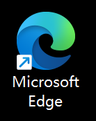
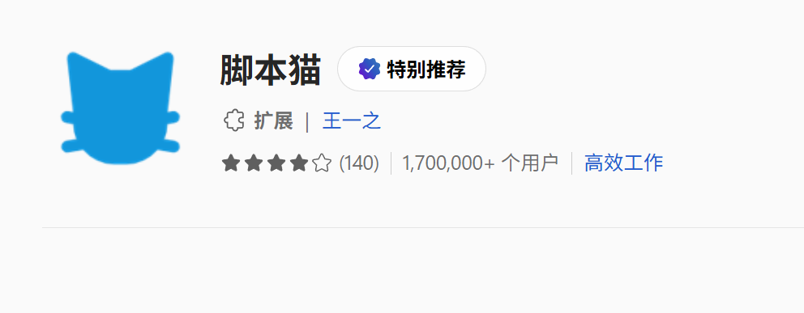
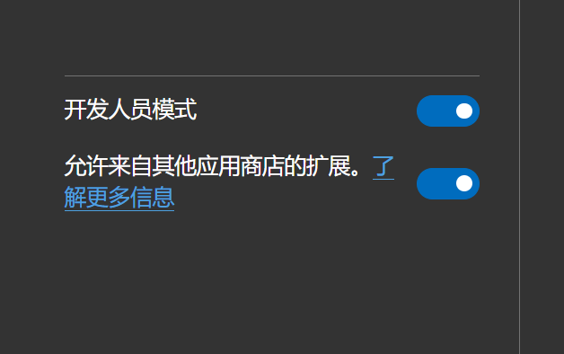
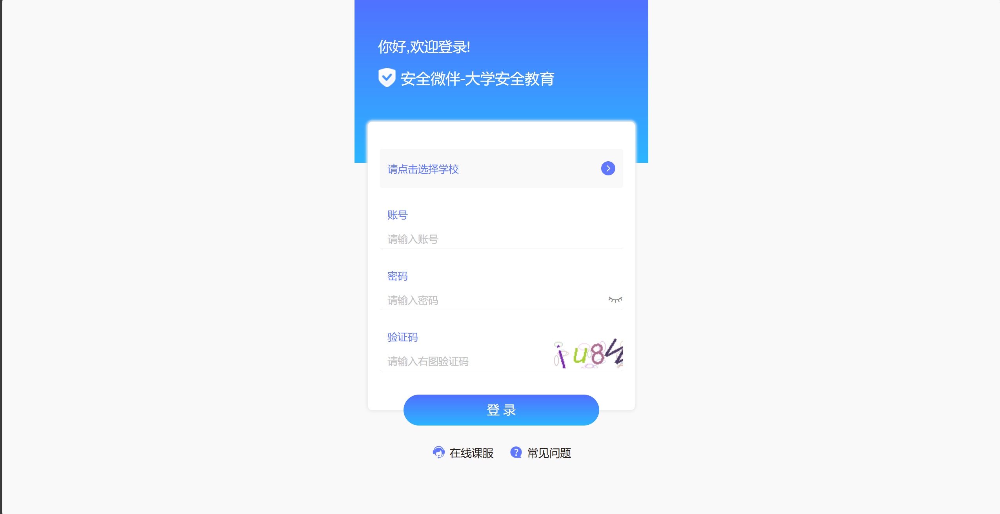
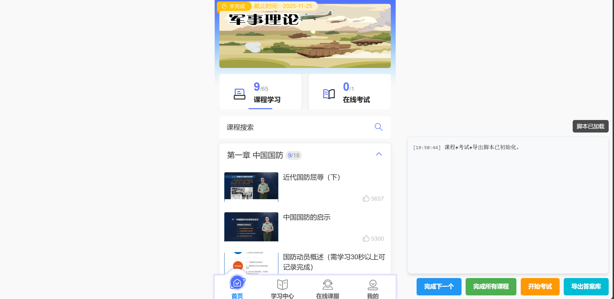
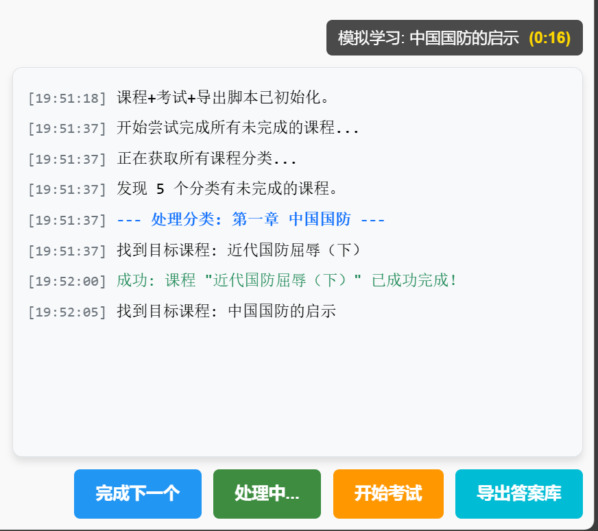
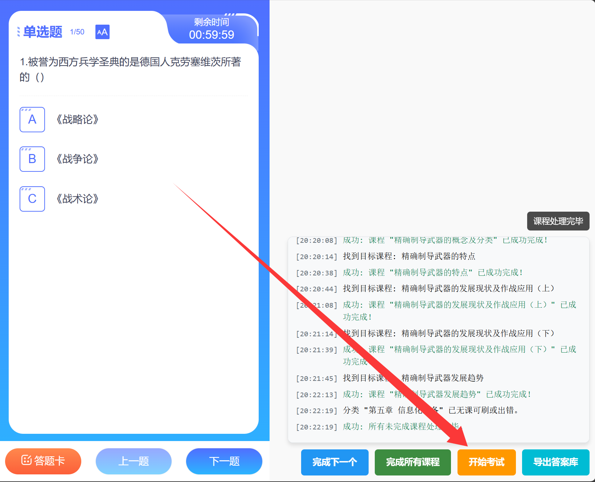
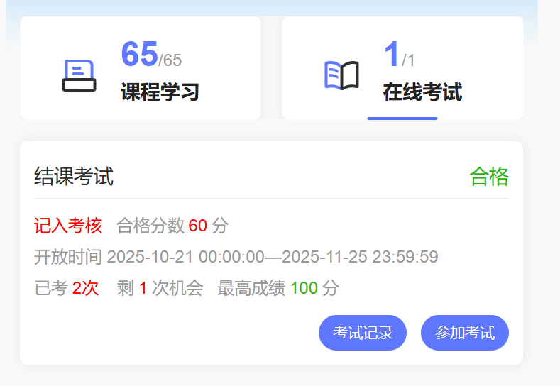

〇：前言
欢迎使用“安全微伴刷课”项目页面。这不是我个人开发的项目，而是一个开源项目，旨在为大家提供安全、便捷的刷课服务。
因为我认为大学本该是一个自由探索的地方，而不是单纯的应试机器，我们可以省去很多时间用于研究自己热爱的东西，就比如你现在正在查看的这个网页。
本项目中涉及的开源原文地址会在下文提及，如有侵权请联系删除。
孙中山先生有云：“行易知难。”所以你不需要弄明白下面讲的这些到底是个什么东西，跟着教程做就行了😄
直入主题吧！
一：准备
该项目适用于电脑端Chromium内核的浏览器，例如Google Chrome、Microsoft Edge、360浏览器、QQ浏览器、夸克等。手机端也有对应的方法，但考虑到在电脑端操作相对方便，本项目以电脑端Microsoft Edge浏览器为介绍视角。它在目前市场上的所有Windows电脑几乎都会作为系统自带的浏览器。
二：安装
首先你需要安装一个用户脚本管理器脚本猫。
如果你无法访问这个链接或加载缓慢，可以点击此处来下载一份zip浏览器扩展包，再复制链接打开这个链接中的页面 的左下角开启下图所示的两个选项，将刚刚下载的文件拖动到浏览器内完成安装。
随后我们安装刷课的核心脚本微伴助手，跟着流程走完即可，确认完成之后就可以进入下一步。
如果你无法访问这个链接或加载缓慢，可以点击下载微伴助手的脚本文件，然后复制链接打开此界面 ，将你刚才下载的微伴助手文件拖进来完成安装。
三：使用
最激动人心的环节！马上就要解放双手了！！
在电脑上登录安全微伴网页版https://weiban.mycourse.cn，根据自己的信息填一下。老师一般发通知的时候会告诉你账号密码该填什么。
登录成功后从首页进入你要刷的课程，在显示了课程章节的界面之后点击浏览器左上角刷新网页按钮，如果没有刷新按钮可以按电脑键盘上的F5键，部分电脑需要同时按Fn+F5组合键。
前面的流程都没有问题的话，脚本的输出日志会显示在网页的右下角，如图：
根据自己的需求，我们现在先把课程刷完。点击完成所有课程按钮，开始脚本自动学习！
安全微伴为了防止恶意刷课，每15秒才能学习一节课程。虽然我感觉这防了跟没防似的
然后你现在可以让它挂在那儿，把时间花在自己的事情上。大约十几分钟就会全部刷完所有课程，最后自动停止。
不过自动考试和刷课的操作有些许不同，我们需要先手动操作，开始一次考试。进入到考试界面之后，点击右下角脚本输出日志下方的开始考试按钮
输出日志提示完成之后，点击左上角回到上一页，退出考试。你可能会发现这个脚本只考了一个很低的分，不用担心，它会先通过一次摸底考试来探测出所有的答案，所以第一次考出低分是很正常的，是计划的一部分。
接下来重新进入考试，看到题目界面之后，再按照同样的办法开始一遍考试，等待之后通常就能获得通过了。
